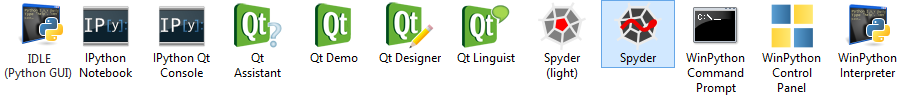

The project home, including source code, documentation and tickets, can be found in our Github organization winpython, the downloads page is currently on Sourceforge, the Discussion group on Google Groups.
Recent Releases
Released in October 2014:
Highlights: Included MinGW-Compiler and fully integrated Cython and Numba! Want to take a look at the usage example?
- WinPython 2.7.8.2, Release Information. Downloads: 32bit and 64bit
- WinPython 3.3.5.2, Release Information. Downloads: 32bit and 64bit
- WinPython 3.4.2.1, Release Information. Downloads: 32bit and 64bit
Released in August 2014:
- WinPython 2.7.8.1, Release Information. Downloads: 32bit and 64bit
- WinPython 3.3.5.1, Release Information. Downloads: 32bit and 64bit
- WinPython 3.4.1.1, Release Information. Downloads: 32bit and 64bit
Older releases can be found at the Downloads page of the former maintainer and creator Pierre Raybaut, but note that they may be outdated.
Overview
WinPython is a free open-source portable distribution of the Python programming language for Windows Vista/7/8, designed for scientific and education usage.

It is a full-featured (see what's inside WinPython 2.7, WinPython 3.3 or WinPython 3.4) Python-based scientific environment:
- Designed for scientists, data-scientists, and education (thanks to NumPy, SciPy, Sympy, Matplotlib, Pandas, guiqwt, etc.):
- Portable:
- it runs out of the box on any Windows with 2Go Ram (Ipython needs Windows>XP, and Ipython Notebook a recent browser)
- the WinPython folder can be moved to any location (local, network, usb drive) with most of the application settings
- Flexible:
- you can install as many WinPython as you want on the same machine: each one is isolated and self-consistent
- these installations can be of different versions of Python (2.7, 3.3 or 3.4) or different architectures (32bit or 64bit)
- Customizable:
- The integrated WinPython Package Manager (WPPM) helps installing, uninstalling or upgrading Python packages
- It's also possible to install or upgrade packages using pip from the WinPython command prompt
- A configuration file allows you to set environment variables at runtime
WinPython is something different from other Python Distributions (see historic motivation and concept):
- non-invasive: Winpython lives entirely in its own directory, without any OS installation
- flavors: releases with added packages are created to better fit a domain out-of-the-box
- do your own flavor: a winpython-creator kit is made available for you

Portable or not, the choice is yours!
WinPython is a portable application, so the user should not expect any integration into Windows explorer during installation. However, the WinPython Control Panel allows to "register" your distribution to Windows (see screenshot below).

Registering your WinPython installation will:
- associate file extensions .py, .pyc and .pyo to Python interpreter
- register Python icons in Windows explorer
- add context menu entries Edit with IDLE and Edit with Spyder for .py files
- register WinPython as a standard Python distribution (standard Python Windows installers will see WinPython in Windows registry)